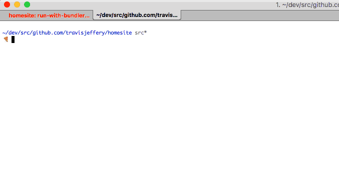

Animated nyan cat in the terminal
Fun little project I wrote in Go! Code on GitHub. Or run it yourself:
go get github.com/travisjeffery/nyancat && nyancat
Software maker and writer.
Fun little project I wrote in Go! Code on GitHub. Or run it yourself:
go get github.com/travisjeffery/nyancat && nyancat